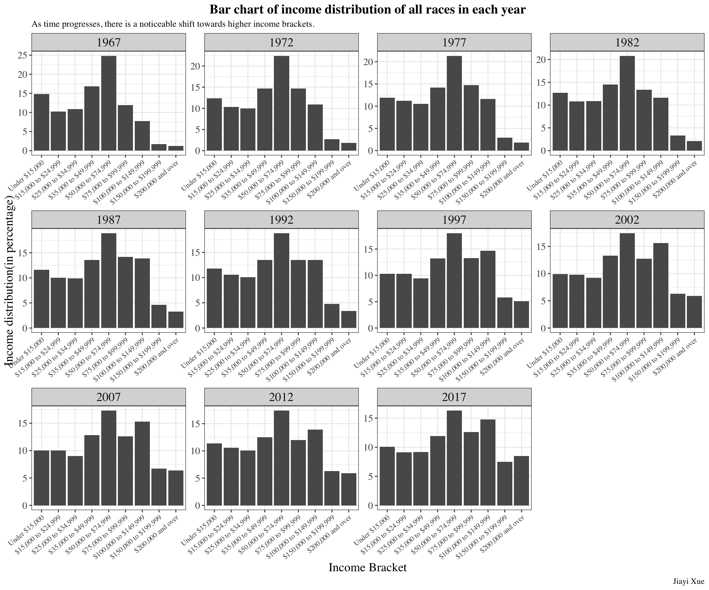

I tried to use this dataset to identify the change of income in America over time and compare the differences of income mean between different races.
Intended Audience
The data is from TidyTuesday, which aims to involves datasets being shared for R users to apply their skills in data wrangling and data visualization(Community 2023). Therefore, this dataset is ideal for data analyst to practice creating visualization and analyzing data. The website mentions income data by race over time, those who are interested in economic conditions and social issues are also the potential audiences.
Rows: 2916 Columns: 9
── Column specification ────────────────────────────────────────────────────────
Delimiter: ","
chr (2): race, income_bracket
dbl (7): year, number, income_median, income_med_moe, income_mean, income_me...
ℹ Use `spec()` to retrieve the full column specification for this data.
ℹ Specify the column types or set `show_col_types = FALSE` to quiet this message.
`summarise()` has grouped output by 'year'. You can override using the
`.groups` argument.
income_distribution_by_year_race
# A tibble: 323 × 3
# Groups: year [53]
year race income_mean
<dbl> <chr> <dbl>
1 1967 All Races 53616
2 1967 Black Alone 34878
3 1967 White Alone 55576
4 1968 All Races 56572
5 1968 Black Alone 37392
6 1968 White Alone 58606
7 1969 All Races 59004
8 1969 Black Alone 38948
9 1969 White Alone 61192
10 1970 All Races 58926
# … with 313 more rows
income_by_year <-filter(income_distribution, race =="All Races") %>%mutate(income_bracket =factor(income_bracket, levels =c("Under $15,000","$15,000 to $24,999", "$25,000 to $34,999", "$35,000 to $49,999", "$50,000 to $74,999", "$75,000 to $99,999", "$100,000 to $149,999", "$150,000 to $199,999", "$200,000 and over"))) %>%select(year, race, number, income_bracket, income_distribution)income_by_year
# A tibble: 477 × 5
year race number income_bracket income_distribution
<dbl> <chr> <dbl> <fct> <dbl>
1 2019 All Races 128451000 Under $15,000 9.1
2 2019 All Races 128451000 $15,000 to $24,999 8
3 2019 All Races 128451000 $25,000 to $34,999 8.3
4 2019 All Races 128451000 $35,000 to $49,999 11.7
5 2019 All Races 128451000 $50,000 to $74,999 16.5
6 2019 All Races 128451000 $75,000 to $99,999 12.3
7 2019 All Races 128451000 $100,000 to $149,999 15.5
8 2019 All Races 128451000 $150,000 to $199,999 8.3
9 2019 All Races 128451000 $200,000 and over 10.3
10 2018 All Races 128579000 Under $15,000 10.1
# … with 467 more rows
Functions Used
dplyr::group_by
dplyr::summarise
dplyr::filter
dplyr::mutate
dplyr::select
Plot
income_distribution_by_year_race %>%ggplot() +geom_line(mapping =aes(x = year, y = income_mean, color = race)) +theme_bw(base_family ="Times") +labs(x ="year",y ="Income mean",title ="Line plot of income mean by race over time",caption ="Jiayi Xue",subtitle ="Substantial Growth in Mean Income Across Racial Groups from 1967 to 2019",color ="Race" ) +theme(plot.title =element_text(size =16, face ="bold", hjust =0.5),plot.subtitle =element_text(size =14),plot.caption =element_text(size =10),axis.text =element_text(size =12),axis.title =element_text(size =15),strip.text =element_text(size =15),legend.text =element_text(size =13),legend.title =element_text(size =14))
The results appear to have some level of duplicate data for “Asian Alone” and “Asian Alone or in Combination” since the dataset was created by combining some raw data from different sources. We are not changing the dataset to avoid breaking old code, but you may want to start from the raw data if you are using this for anything important.
income_distribution %>%filter(!is.na(race), !is.na(income_mean)) %>%ggplot() +geom_boxplot(mapping =aes(x = race, y = income_mean, color = race)) +theme_bw(base_family ="Times") +labs(x ="Race",y ="Income Mean",title ="Box plot of income mean by race",subtitle ="Trend: The 'Asian Alone' and 'Asian Alone or in Combination' groups have higher median incomes compared to other groups, \nas indicated by the central line of their boxes. \nThey also have a wider interquartile range, suggesting more variation within the income distribution. \nAll Races has a median income lower than the Asian categories but higher than the rest. \nThe 'Black Alone' and 'Black Alone or in Combination' groups show lower median incomes with narrower interquartile ranges, \nindicating less variation within their income distributions.",caption ="Jiayi Xue",color ="Race" ) +theme(plot.title =element_text(size =16, face ="bold", hjust =0.5),plot.caption =element_text(size =10),axis.text =element_text(size =12),axis.text.x =element_text(angle =30, size =12, hjust =1),axis.title =element_text(size =15),strip.text =element_text(size =15),legend.text =element_text(size =13),legend.title =element_text(size =14))
Bar chart
Given the extensive range of years, it’s impractical to visualize each one individually. To manage this, I’ve sampled data at five-year intervals, starting from 1967, which allows for a comprehensive yet concise visual representation of trends over time.
income_by_year %>%filter(year %in%seq(from =1967, to =2019, by =5)) %>%ggplot(aes(x = income_bracket, y = income_distribution)) +geom_col() +facet_wrap(~year, nrow =3, scales ="free") +theme_bw(base_family ="Times") +labs(x ="Income Bracket",y ="Income distribution(in percentage)",title ="Bar chart of income distribution of all races in each year",subtitle ="As time progresses, there is a noticeable shift towards higher income brackets.",caption ="Jiayi Xue" ) +theme(plot.title =element_text(size =16, face ="bold", hjust =0.5),plot.caption =element_text(size =10),axis.text =element_text(size =12),axis.text.x =element_text(angle =40, size =9, hjust =1),axis.title =element_text(size =15),strip.text =element_text(size =15))

Summary
The dataset provides a comprehensive overview of income distribution across different racial groups in the United States from 1967 to 2019. The line plot illustrates a substantial increase in mean income over time for all racial categories. The box plot reveals significant income disparities among the groups, with Asian and White races typically having higher income means than Black and Hispanic groups, which is consistent with the finding in this paper(Center 2016). Finally, the bar chart demonstrates a shift towards higher income brackets over the decades, suggesting an overall increase in wealth among all races. Together, these visuals indicates the existence of income inequality and the progress made from 1967 to 2019.